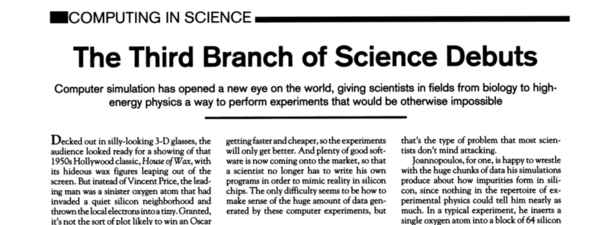
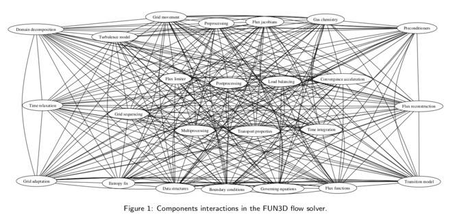

a method or procedure that has characterized natural science since the 17th century consisting in systematic observation, measurement, and experiment, and the formulation, testing, and modification of hypothesis
– Oxford English Dictionary
Science is the systematic enterprise of gathering knowledge about the universe and organizing and condensing that knowledge into testable laws and theories. The success and credibility of science are anchored in their willingness to expose their ideas and results to independent testing and replication by other scientists. This requires the complete and open exchange of data, procedures and materials.
– American Physical Society
Here shown in the form given by Ziman (2000).
The motivation for using the scientific method is to route out error.
Two established branches of science:
One or two emerging branches of science:

What might distinguish computational science from other branches?
What has worked to disseminate science in the empirical branch?
Publishing in archival journals with a detailed description of Materials and Methods sufficient for replication.
| Note: | The first scientific journal, the Transactions of the Royal Society London, was created primarily to establish precedence of discoveries. This also became a means of dissemination and had a peer-review. After a few issues, it was realised that the transactions were also a great archive. |
That first journal did what we still think of as the role of journals today: registration, dissemination, peer-review, and archival record.

that the person I addressed them to might, without mistake, and with as little trouble as possible, be able to repeat such unusual experiments.
– New Experiments, 1660, Robert Boyle
an article about computational science in a scientific publication is not the scholarship itself, it’s merely scholarship advertisement. The actual scholarship is the complete software development environment and the complete set of instructions that generated the figures.
– Jon Clarebout, paraphrased by Donoho (1998)
My thesis: computational science has lost its way with regards to the scientific method. Our work often fails to be replicable, it lacks transparency of communication, and is unverifiable. This hinders or makes it impossible to root out error.
…but we define our algorithms formally with mathematics in computational fluid dynamics. We must be safe from these errors, right?

Kleb and Wood (2004) surveyed 49 new CFD models in IJNMF and JCP. They found that only 22% of the models were published with component level data.
In other words, for 78% of those models (algorithms) there’s no easy means to verify that the algorithm is implemented correctly!
Augment our traditional means of dissemination when dealing with computational science: publish the simulation code as open source.
Our view is that we have reached the point that, with some exceptions, anything less than release of actual source code is an indefensible approach for any scientific results that depend on computation, because not releasing such code raises needless, and needlessly confusing, roadblocks to reproducibility.
– Ince, Hatton & Graham-Cumming (2011), Nature
A survey of attendees (1008 university researchers) at a Machine Learning conference were asked about their perceived barriers to sharing code. The top 10 reasons not to share code.
| The time it takes to clean up and document for release | 77.78% |
| Dealing with questions from users about the code | 51.85% |
| The possibility that your code may be used without citation | 44.78% |
| The possibility of patents or other IP constraints | 40.00% |
| Legal barriers, such as copyright | 33.72% |
| Competitors may get an advantage | 31.85% |
| The potential loss of future publications using this code | 31.11% |
| The code might be used in commercial applications | 28.15% |
| Availability of other code that might substitute for your own | 21.64% |
| Whether you put in a large amount of work building the code | 20.00% |
| Technical limitations, ie. webspace platform space constraints | 20.00% |
What we’re doing towards reproducible computational science with eilmer
As an example, publication in the Journal of Open Research Software requires the following:
1. Is the software in a suitable repository?
2. Does the software have a suitable open licence?
3. If the Archive section is filled out, is the link in the form of a persistent identifier, e.g. a DOI? Can you download the software from this link?
4. If the Code Repository section is filled out, does the identifier link to the appropriate place to download the source code? Can you download the source code from this link?
5. Is the software license included in the software in the repository? Is it included in the source code?
6. Is sample input and output data provided with the software?
7. Is the code adequately documented? Can a reader understand how to build/deploy/install/run the software, and identify whether the software is operating as expected?
8. Does the software run on the systems specified?
9. Is it obvious what the support mechanisms for the software are?
From the blog of Cameron Neylon in 2010 on the launch of the journal Open Research Computation:
The submission criteria for ORC Software Articles are stringent. The source code must be available, on an appropriate public repository under an OSI compliant license. Running code, in the form of executables, or an instance of a service must be made available. Documentation of the code will be expected to a very high standard, consistent with best practice in the language and research domain, and it must cover all public methods and classes. Similarly code testing must be in place covering, by default, 100% of the code. Finally all the claims, use cases, and figures in the paper must have associated with them test data, with examples of both input data and the outputs expected.
The primary consideration for publication in ORC is that your code must be capable of being used, re-purposed, understood, and efficiently built on. You work must be reproducible. In short, we expect the computational work published in ORC to deliver at the level that is expected in experimental research.
Spoiler alert: This journal never published a single article. It did, however, morph into Source Code for Biology and Medicine.
Revision ID is built into the executable and reported in logfile
> e4shared --job=cone20 --prep
Eilmer4 compressible-flow simulation code.
Revision: e1a4f47b18c8 384 default tip
Begin preparation stage for a simulation.High-level user input is converted to low-level verbose input for simulation. The verbose input is a complete record of input.
prep-gas, prep-chem, e4shared --prepUnit testing is encouraged for every (non-trivial) method and function in a module.
Unit tests are coordinated at the package level, see gas and kinetics
Makes heavy use of D language version directive
Tests coordinated with tcltest module
version(ideal_gas_test) {
int main() {
auto gm = new IdealGas();
auto gd = new GasState(gm, 100.0e3, 300.0);
gm.update_thermo_from_pT(gd);
assert(approxEqual(gd.rho, 1.16109, 1.0e-4), failedUnitTest());
return 0;
}
}Running the integration tests.
> cd dgd/examples/eilmer
> tclsh eilmer-test.tclPresently we work with students locally. We have had no external development of the new eilmer code yet. We try to encourage a set of development practices that have served myself and Peter Jacobs very well over a large number of years.
I see this as a large challenge if we move to a model of encouraging external development on the code. But a challenge I think we should embrace.
Don’t commit code after 5pm on a Friday.

Asking for source code release sounds like asking for a lot in terms of changing how we disseminate our work. There are examples in other areas of science where the community has come together and changed disclosure practices: